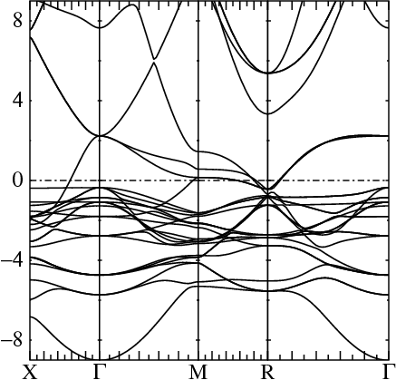
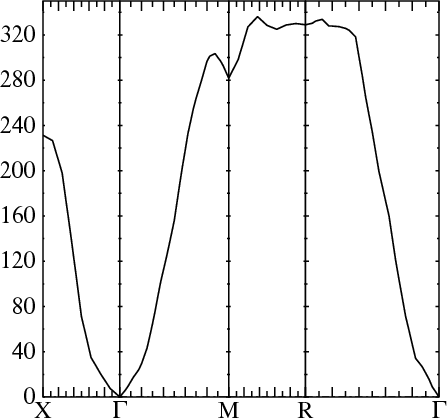

This demo proceeds with the following sequence of files + programs:
To get started, copy doc/demos/asa-copt/init.copt to your working directory. Inspect the init file and you will see it contains just the minimum structural information, apart from one line supplying some information about the magnetic structure. Then use the blm tool
blm --mag --nk=8 --asa --gf coptblm should generate file actrl.copt, which should be essentially the same as doc/demos/asa-copt/ctrl.copt. (If this is not the case, something is wrong with your configuration. You should not continue if your template does not agree with the one supplied.)
The input file itself is described in this tutorial in an ASA context (and here in a full-potential context). This web page describes in detail how to generate input files using blm. Even though it is written for the full-potential code lmf, much of the description also applies to the present context. The present tutorial addresses ASA-specific aspects not covered there.
The command-line arguments are not required, but they supply quantities blm cannot determine automatically, that you will have to supply at some point. If you supply them on the command-line they are folded into the ctrl file at the outset; or, you can edit the ctrl file after it is generated. Command-line switches blm recognizes are summarized in Building_FP_input_file.html. In particular, for more discusssion of --nk=.., which governs the k-point mesh, see the this demo.
Note in particular this line in SPEC:
SCLWSR=1 OMAX1=.20 .26 .24 OMAX2=.4 .6 .6 WSRMAX=3.3In the ASA, the sum of sphere volumes must match the unit cell volume. This one of the severest limitations of the ASA. (In the present case packing is not an issue, but it typically is for open structures. In such a case you must add empty spheres.)
blm finds sphere radii so that spheres touch, but do not overlap. SCLWSR=1 turns on the automatic sphere resizer, which in this case enlarges the spheres until they fill space. This link discusses sphere radii in some detail, what SCLWSR does and also OMAX1, OMAX2, WSRMAX, which add constraints as the spheres are resized.
These lines are also ASA-specific:
% const ccor=t sx=f gamma=sx adnf=~sx scr=4
OPTIONS
ASA[ CCOR={ccor} ADNF={adnf} GAMMA={gamma}] SCR={scr} SX={sx}
This ctrl file will result in
SCR=4
(variable scr is declared with value 4).
To see quickly what
SCR is used for, do
lm --inputand search for OPTIONS_SCR. You should find
OPTIONS_SCR opt i4 1, 1 default = 0 Use scr to accelerate convergence: ... 4 Use model response to screen output qThis token is used to accelerate convergence to self-consistency. It is described in some detail on this web page.
Without any other information the spin polarized calculation will proceed with zero magnetic moment. You have to supply some initial information about the magnetic structure. Since we know that the magnetization is concentrated on the Co (Pt is paramagnetic, though it has a high magnetic susceptibility), the init file supplies an initial magnetic moment on the Co site of about 2 Bohr on the Co d orbital, in the SPEC category. Of course the actual magnetic moment is determined self-consistently.
If you are not interested in this part of the tutorial, you can safely omit --gf.
For a fuller description of the ctrl file, see the the ASA tutorial, the FP tutorial, and also Building_FP_input_file.html.
Before proceeding to a self-consistent calculation you should ensure that the sphere radii satisfy the requisite criteria, namely that the sphere volumes sum to the unit cell volume and at the same time that the sphere overlaps are not too large (<20%, better <18%). Run
lmchk ctrl.coptYou should see this line:
Cell volume= 371.16791 Sum of sphere volumes= 371.16791 (1)
↑
The red arrow points to the ratio of these two volumes. It is exactly unity by construction, because
SCLWSR=1
is present in
SPEC.
You should also inspect the table of sphere overlaps. You should see a table beginning with:
ib jb cl1 cl2 Pos(jb)-Pos(ib) Dist sumrs Ovlp % summt Ovlp % 1 2 Pt Co 3.593 3.593 0.000 5.082 5.695 0.61 12.1* 3.557 -1.52 -30.0 ... OVMIN, 76 pairs: fovl = 1.78136e-6The largest overlap is 12%, which is more than acceptable (L12 is a close-packed structure).= 11% max ovlp = 12.1%
lmstr ctrl.copt ← Make and store structure constantsIt should store str.copt and sdot.copt on disk. (If not, something is wrong and you should not proceed.)
As of yet we have no starting density or potential. You can see this immediately by trying to run the band code straight off:
lm ctrl.coptThe program will stop with this message:
LM: Q=ATOM encountered or missing inputIn usual LDA calculations, a trial density is obtained by generating densities for free atoms, and superposing them (Mattheis construction). While the ASA code could have been written to do just this, it does something different. This code takes advantage of the simplification the ASA offers, namely that the sphere density is completely determined by a small number of parameters, namely the log derivative parameters P and energy moments of the charge density Q0..2 for each l channel. We can supply reasonable guesses through the ctrl file, or let the program pick some defaults as a first guess. Defaults are typically assigned so that Q0 is the charge in the l channel of the atom and Q1..2 are taken to be zero. While this is a pretty crude guess (cruder than the Mattheis construction) usually it is good enough that the program can find its way to the proper self-consistent solution.
The ASA code can either start from "potential parameters", which gives it enough information to generate energy bands and calculate moments (Pl, Q0..2,l) , or from the moments (Pl, Q0..2,l) which is sufficient for the sphere routine to fix the potential and calculated potential parameters. The band and sphere blocks of the code are thus complementary: one takes the input of the other and generates output required by the other. The cycle is described here.
The ctrl file is built with the following START category:
START CNTROL={nit==0} BEGMOM={nit==0}
If BEGMOM is nonzero, lm will start from potential parameters (which don't exist yet, in the present case).
lm ctrl.copt -vnit=0 ← Because -vnit=0, BEGMOM={nit} is preprocessed into BEGMOM=0
lm will start from (default) moments and generate a trial density for each sphere, together with potential parameters
corresponding to potential generated.
PPAR: Pt nl=4 nsp=2 ves= 0.00000000 l e_nu C +/-del 1/sqrt(p) gam alp ... 1 -0.33739987 0.66438324 0.17542338 6.2239779 0.13462479 0.13462479 2 -0.21536757 -0.17914263 0.02841817 1.1299418 0.01358564 0.01358564 ... 1 -0.33739987 0.66438324 0.17542338 6.2239779 0.13462479 0.13462479 2 -0.21536757 -0.17914263 0.02841817 1.1299418 0.01358564 0.01358564 ...and a similar table for Co. Particularly important are C, the band center of gravity C and the bandwidth del. You can see that Cp sits far above zero while Cd is a little below. It tells you that the Pt d orbital is important for bonding while the Pt p orbital is pretty far above from the Fermi level and of much less importance. del is the bandwidth parameter; a little more detail is given in this web page. A disk file is created for each class. It contains the (Pl, Q0..2,l), the potential parameters, and possibly other things. Take a look at files co.copt and pt.copt. You can see what defaults were chosen for (Pl, Q0..2,l).
SPEC ATOM=Co MMOM=0,0,2.2MMOM is put in ctrl.copt as a token in the Co species.
When the sphere program selects default (Pl, Ql) it must select numbers for each spin channel. MMOM causes the starting Ql: MMOM=0,0,2.2 splits the charge in d channel so that spin ↑ has 2.2 more electrons than spin ↓.
Without supplying some initial magnetic structure, no magnetic moment would appear in the spin-polarized calculation. The system needs a "push" in the initial direction to find the magnetic state. The precise value 2.2 is not important: this quantity is determined self-consistently. Choosing it rather large (the bulk moment is 1.8 μB) gives it a strong initial push so to encourage it not revert to a (metastable) nonmagnetic state in the course of a self-consistent calculation.
Elemental Pt has no moment, so none was supplied in the init file.
lm ctrl.copt -vnit=30 --pr31,20 ← NIT={nit} is preprocessed into NIT=30.
--pr31,20 sets verbosity fairly low
will perform up to 30 self-consistent cycles, that is
PPAR → (Pl, Q0..2,l) → PPAR → (Pl, Q0..2,l) → PPAR ...
↑ ↑ ↑ ↑
crystal sphere crystal sphere
lm will continue until the RMS change in (Pl, Q0..2,l) falls below tolerance
ITER_CONVC, or until 30 iterations is reached. In this demo convergence should be reached in
21 iterations.
echo 1001 -1 .5 | lmdos copt ← Mesh of 1001 points on energy interval (-1,0.5)The command should make file dos.copt. The first line should read
-1.00000 0.50000 1001 8 2 -0.12927 0.00000 1
↑ ↑ ↑ ↑ ↑
energy window 8 channels, 2 spins, EF
There are 8 channels because the largest l cutoff is 3;
spdf channels for Pt and Co yield 8 channels. (Note that the l cutoff for Co is 2,
so the f channel DOS is zero.)
*Note Even though there 4 atoms, there are only 2 classes. lm saves moments by class, and lmdos generates partial DOS for whatever channels are given to it. You can resolve DOS in a variety of ways through the --pdos switch. See this web page for a detailed discussion of the DOS and its decomposition.
The DOS are dumped one after the other in dos.copt, which is difficult to read directly. But you should see this table at the close of lmdos' output:
Channels in dos file generated by LMDOS:
site class label spin-1 spin-2
1 1 Pt 1:7:2 2:8:2
2 2 Co 9:15:2 10:16:2
Each channel has two DOS (spins ↑ and ↓). Thus the odd (even) numbered DOS correspond to spin ↑ (spin ↓).
This table makes it easy for you to generate a picture of the partial DOS you are interested in. For example, suppose you want to draw a picture of the spd DOS on the Pt and the Co, and you would like each channel to be displayed in a separate panel. If you have the pldos and fplot packages installed you can do this very conveniently. Spin ↑ and spin ↓ can be treated as one panel, with the ↑ part drawn above the zero and the ↓ part drawn below the zero. You can tell pldos what channels go into each panel through the -lst switch.
echo 15 7 -.8 0.5 | \ pldos -ef=0 -fplot -lst="1;3;5;9;11;13" -lst2 dos.copt ← -lst defines panels: `;' starts a new panel. See below for -lst2This pldos command will make 6 panels of DOS (see Figure above), composed from channels 1, 3, 5, 9, 11, and 13 respectively. (Any of these six numbers can actually be lists of channels if you wish to combine channels into one panel.)
15 ← An upper bound DMAX for the DOS in a given panel (DOS can be very spikey)
7 ← The height, in cm, of a panel of height DMAX
-.8 0.5 ← The energy window for the abscissa
-lst=.. specifies the channels for the DOS.
For the present case with both ↑ DOS and ↓ DOS, it refers to the ↑ DOS;
-lst2 supplies the corresponding information for the ↓ DOS.
You can, but do not need to supply arguments for -lst2 . Omitting them tells pldos to copy the ↑ list to the
↓ list, incrementing each element by 1. This automatically generates the ↓ analogs of the ↑ channels (2, 4, 6, 10, 12, 14 in this instance).
-ef0 tells pldos to assign EF as the energy zero, and -fplot tells pldos to create a data file (dosp.dat and because this is a spin polarized calculation, dosp2.dat) and script (plot.dos) for the fplot graphics package.
*Note to see all the switches pldos accepts, invoke it without any arguments.
fplot makes the postscript file ps.dat:
fplot -pr10 -f plot.dosRename this file to some-name.ps and use your favorite postscript reader to view it. You should see something close to the Figure shown. As you might expect the DOS at EF is dominated by the Co and Pt d channels. The Co d DOS is spin-split by about ΔE=0.18 Ry or so, while the Pt is scarcely so. ΔE gives you a rough estimate for the Stoner I, since approximately ΔE = I×M, where M is the local magnetic moment. Here we get I=0.18/1.8 = 0.1 Ry, slightly larger than 1 eV. A better calculation puts I closer to 1 eV.
The automatically generated figure is a bit untidy (too many tics on the y axis, for example). You can "prettify" the picture by editing plot.dos. Also consider adding -esclxy=13.6 to the pldos command-line arguments. Then the abscissa will be in eV and the DOS will be in eV−1.
The DOS in the Figure appear a bit "ragged." You can make them smoother by using a finer k-mesh. 
cp startup/syml.sc syml.coptGenerate the bands with
lm ctrl.copt --band~fn=syml
The bands are dumped in a file bnds.copt. The following creates a postscript file for the spin-1 bands (requires that you have the plbnds and fplot packages installed):
echo -9 9 5 10 | plbnds -scl=13.6 -ef=0 -fplot -spin1 -lbl=X,G,M,R,G bnds.copt fplot -f plot.plbndsRename this file to some-name.ps and use your favorite postscript reader to view it. You should see something close to what is shown in the Figure.
You may wish to draw energy bands with color weights. The colors supply information about which orbitals contribute to a band (e.g. to select out the Pt d or Co d character), which can be very useful when interpreting them.
gf/test/test.gf co 1 2 ← Test 1 for 2nd order parameterization; test 2 for 3rd orderlmgf is a bit messier to work with (Green's functions are harder to stabilize than wave functions), and it a bit less accurate as the simplifications to lm amount to approximations. So, typically lm makes a better self-consistent potential.
But lmgf can do things lm doesn't do, e.g. calculate magnetic exchange interactions through linear response as this tutorial demonstrates. Sometimes there is a need or advantage to carrying self-consistency via lmgf, e.g. when performing CPA calculations. Unless there is good reason to do otherwise, it is better use the self-consistent potential generated by lm to calculate other properties such as the magnetic exchange parameters. We follow that strategy here.
Adding --gf to the blm command line argument modifies actrl.copt in two ways:
% const gfmode=1 c3=t
GF MODE={gfmode} GFOPTS={?~c3~p3;~p2;}
% const nz=16 ef=0
EMESH={nz},10,-1,{ef},.5,.3 # nz-pts;contour mode;emin;emax;ecc;bunching
lmgf --inputand look for GF_MODE. You should see:
GF_MODE reqd i4 1, 1 default = 0
0: do nothing
1: self-consistent cycle
10: Transverse exchange interactions J(q), MST
11: Read J(q) from disk and print derivative properties
...
If MODE=1, lmgf does a self-consistent calculation, generating the
P and Q0..2 for each l channel using Green's functions rather
than wave functions as lm does.
GFOPTS={?~c3~p3;~p2;}
becomes `GFOPTS=p3;' after parsing by the preprocessor,
because c3 is nonzero
(see expressions rule 1c).
`p3' tells lmgf to use 3rd order potential functions (somewhat more accurate than 2nd order, but also prone to generating false poles not too far from the real axis)
This contour is specified through EMESH. Breaking down the constituents of EMESH as autogenerated by blm:
EMESH={nz} ← number of energy points in the contour; {nz} evaluates 16 in this file
10 ← elliptical contour
-1 ← starting energy on the contour. Must be deeper than the lowest state in the system (-0.776 Ry)
{ef} ← Fermi level determined by charge neutrality; see below
0.5 ← eccentricity of the ellipse ranging from 0 (circle) to 1 (line)
0.3 ← bunching parameter, bunching points near Ef. 0→no bunching
We don't know what EF is a priori. In the ASA, a general reasonable guess is 0.
Since a band calculation was performed, we do know EF generated by lm: it is −0.12927 Ry.
EF is fixed by charge neutrality.
If lmgf generates exactly the same spectrum as lm, and the k-integration were fully converged (or at least identical in the two cases)
EF would be the same for lm as for lmgf. Neither however, is the case and we can expect
the charge neutrality points will slightly different in the two methods.
The simplest way to find the charge neutrality point is to run lmgf interactively in the self-consistent mode (GF_MODE=1). By running lmgf interactively you can monitor convergence. Do:
lmgf ctrl.copt -vnit=30 --pr31,20 --iactiv -vef=-.1293You should see this table:
GFASA: integrated quantities to efermi = -0.1293
PL D(Ef) N(Ef) E_band 2nd mom Q-Z
spin 1 11.461193 21.527368 -7.139484 2.654629 3.027368
spin 2 79.615727 15.412515 -4.696215 1.699808 -3.087485
total 91.076920 36.939883 -11.835699 4.354436 -0.060117
deviation from charge neutrality: -0.060117
Evidently ef=-.1293 results in a slight electron deficiency.
lmgf will estimate a constant shift to crystal potential to make the system neutral,
and interpolate G to contour adjusted by this shift using a Pade approximant.
lmgf prints out some results of the Pade correction in a subsequent table.
Corrections to integrated quantities estimated by Pade interpolation
PL D(Ef) N(Ef) E_band 2nd mom Q-Z
spin 1 8.860109 21.530130 -7.151567 2.654684 3.030130
spin 2 110.802334 15.469870 -4.712054 1.700763 -3.030130
total 119.662442 37.000000 -11.863621 4.355448 0.000000
deviation from charge neutrality: 0
At the prompt you should see
QUERY: redo gf pass (def=F)?It is asking you whether you want to accept the Pade approximant, or redo the GF calculation with the potential shift added. Let's do the latter, to see how good the estimate was.
QUERY: redo gf pass (def=F)? st <RET> <RET>After the cycle you should see
deviation from charge neutrality: 0.01565The Pade correction reduces the deviation from neutrality but overestimates the shift. A new estimate is made for the potential shift and the prompt reappears. You can repeat the GF cycle as many times as you like. If you iterate enough you should see something like:
gfasa: potential shift this iter = 0.000001. Cumulative shift = -0.000429The shift of this last iteration is negligible. `Cumulative shift' is the net shift accumulated over all the iterations.
You can now proceed to self-consistency2 but we will instead use the potential generated by lm in order to make the exchange parameters.
At the prompt enter
QUERY: redo gf pass (def=F)? a <RET>to prevent lmgf from continuing its self-consistency cycle. The constant potential shift is just the negative the the requisite Fermi level shift to achieve charge neutrality: ef needs to be adjsted to -0.1293−(-0.000429) = −0.1289 Ry.
To confirm that this is the correct ef, repeat the interactive lmgf calculation with -vef=-.1289.
lmgf calculates JRR'(q) from the "Lichtenstein formula." This famous expression,3 closely related the static transverse magnetic susceptibility χ+−, is derived from density functional perturbation theory. It establishes a first-principles basis for the Heisenberg model. One elegant (though approximate) feature of the ASA is that the magnetization is everywhere associated with an atomic sphere. For local moment systems, the magnetization is well confined inside a sphere; thus associated with every site R there is a well defined local moment. If sufficiently localized it rotates rigidly under the influence of an external perturbation. The Lichtenstein formula is derived under these assumptions, among others.3
When you set GF_MODE=10, lmgf will generate JRR'(q), and then perform an inverse Bloch transform (by Fast Fourier Transform) to make JR+T,R' for as many lattice translation vectors T as there are k-points. In the present instance, calculate them with
lmgf -vgfmode=10 ctrl.copt -vef=-.1289Results are saved in file jr.copt (see below).
Most of the analysis is done in the next step, but already the output from gfmode=10 contains some useful information. In the first of this pair of tables you see J0 and 2/3 J0. J0 is the net Weiss magnetic field from the surrounding neighbors; 2/3 J0 would be the (classical) mean-field estimate for the critical temperature Tc if there were one atom/cell. Since the Pt moment is very small it is weakly magnetic and has little effect on Tc. In the second table J0 is decomposed into lm contributions. As expected, the contributions to J0 originates almost entirely from the d states.
If you run lmgf with GF_MODE=11, it reads jr.copt and does some analysis with the parameters. Invoke lmgf with
lmgf -vgfmode=11 ctrl.copt -vef=-.1289A unit cell of N sites has N2 pairs. Thus jr.copt holds a succession of N2 tables of J, one array for each RR' pair in the unit cell. Each array has n1n2n3 exchange parameters, corresponding to the lattice translation vectors that follow from the Fast Fourier Transform of a k mesh of n1n2n3 points. You can find the headers for each array (headers follow a standard format this package uses) by doing:, e.g. : grep rows jr.copt to see:
% rows 64 cols 8 real rs ib=1 jb=1 % rows 64 cols 8 real rs ib=1 jb=2 ...Each array has 64×8 entries, for T vectors derived from 8×8×8 k-points (the 3D array is stored in a 2D format). lmgf unpacks these (GF_MODE=11) and prints them out in a sequence of tables, e.g. this one coupling all pairs of atoms belong to sites 2 and 3 in the unit cell. Pairs are ordered by separation distance d. Interactions fall off rapidly with d, and oscillate around 0, as might be expected from RKKY theory. Then follow estimates for the critical temperature Tc. Tc is estimated in Weiss mean-field theory, and also according to a spin-waves theory by Tyablikov (sometimes called the "RPA"). Mean-field tends to overestimate Tc; RPA tends to be a little more accurate but tends to underestimate it. From these two estimates Tc should be around 1000K. 
Next follows an estimate for the spin wave stiffness. Finally because a symmetry lines file exists, copied previously from:
cp startup/syml.sc syml.coptlmgf reads this file and calculates the spin wave spectrum from the Heisenberg model, along the lines specified. Results are saved in bnds.copt (the energy scale is now mRy).
Plot magnon spectra using the same technology you use for plotting energy bands. If you have the plbnds and fplot packages installed:
echo 0 350 5 10 | plbnds -scl=13.6 -fplot -lbl=X,G,M,R,G bnds.copt fplot -f plot.plbndsRename this file to some-name.ps and use your favorite postscript reader to view it. You should see something close to what is shown in the Figure. Magnon energies are in meV.
*Note The 8×8×8 mesh is a bit coarse. Use a finer k mesh for a smoother and more accurate magnon spectrum.
1
One quirk may arise in this demo, depending on what compiler you use. For some intermediate iteration to self-consistency
the inverse iteration algorithm used to diagonalize the hamiltonian may fail.
This does happen on rare occasions, but is of little consequence other than being a nuisance.
There are two workarounds:
2 If you do proceed to self-consistency using lmgf, note that it writes the potential shift and Fermi level to file
vshft.copt. This shift is automatically read when lmgf is restarted.
After self-consistency is reached you can
either keep vshft.copt,
or remove the file and modify
ef
so charge neutrality is satisfied without the shift.
3 A. I. Liechtenstein, M. I. Katsnelson, V. P. Antropov, and V. A. Gubanov,
Local spin density functional approach to the theory of exchange interactions in ferromagnetic metals and alloys,
J. Magn. Magn. Mater. 67, 65 (1987). The authors were not aware of it at the time, but
this formula makes a "long wave approximation;" see
V. Antropov,
The exchange coupling and spin waves in metallic magnets: removal of the long-wave approximation,
J. Magn. Magn. Mater. 262, l192 (2003). The formula for J(q)
is exact (within the context of the ASA) only in the q→0 limit.
The ASA itself, and density-functional theory are other approximations implicit in the formula.
Notes
INVIT=f # slows execution slightly, but algorithm is more stable.